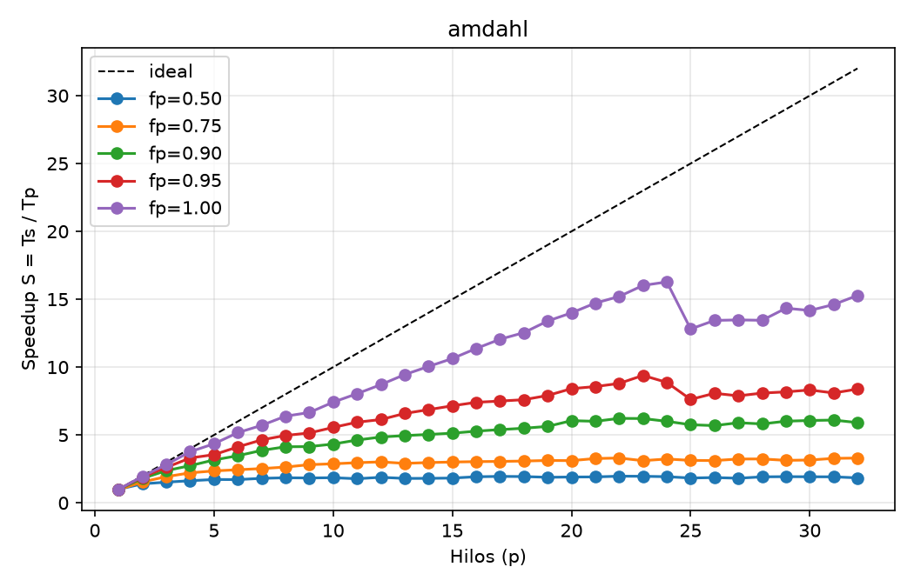
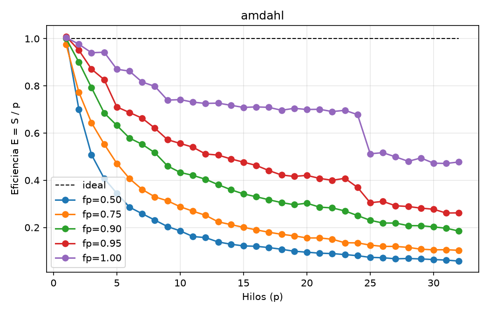
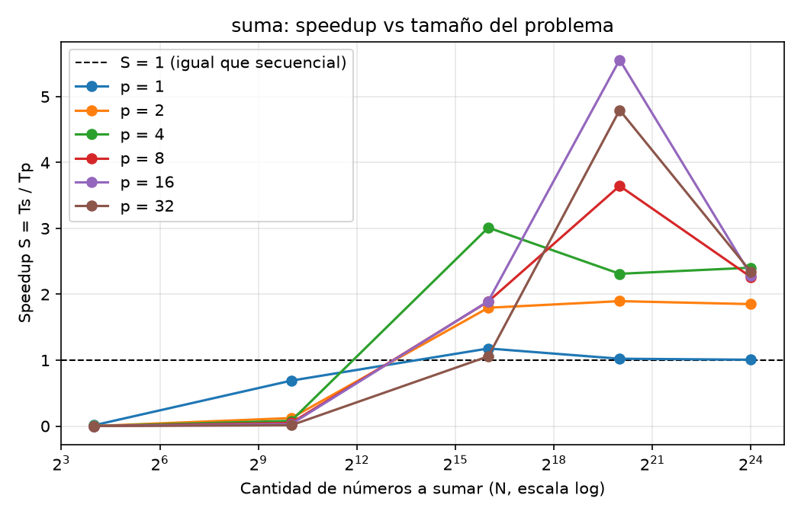
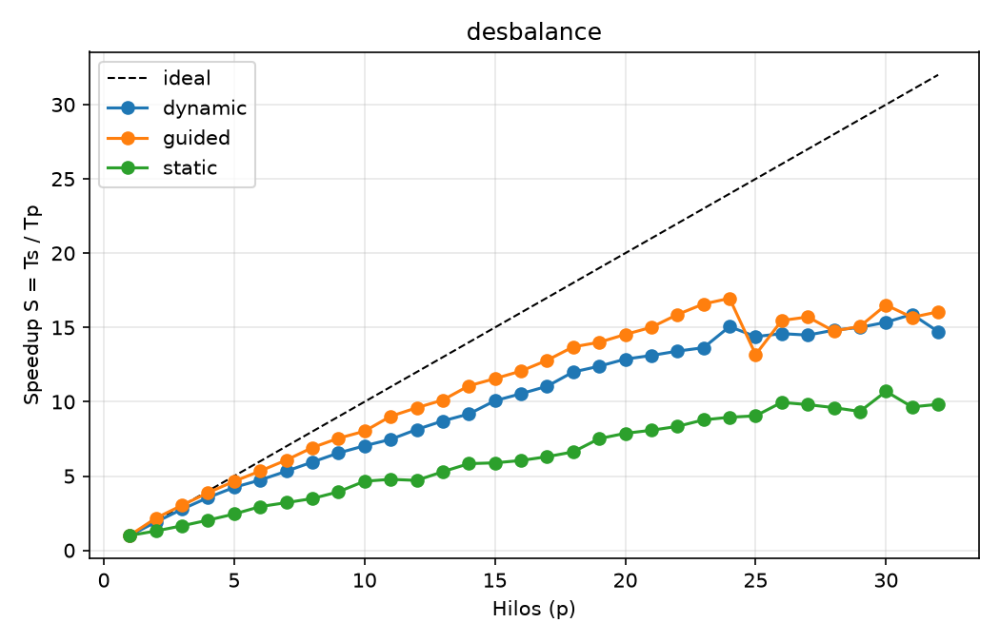
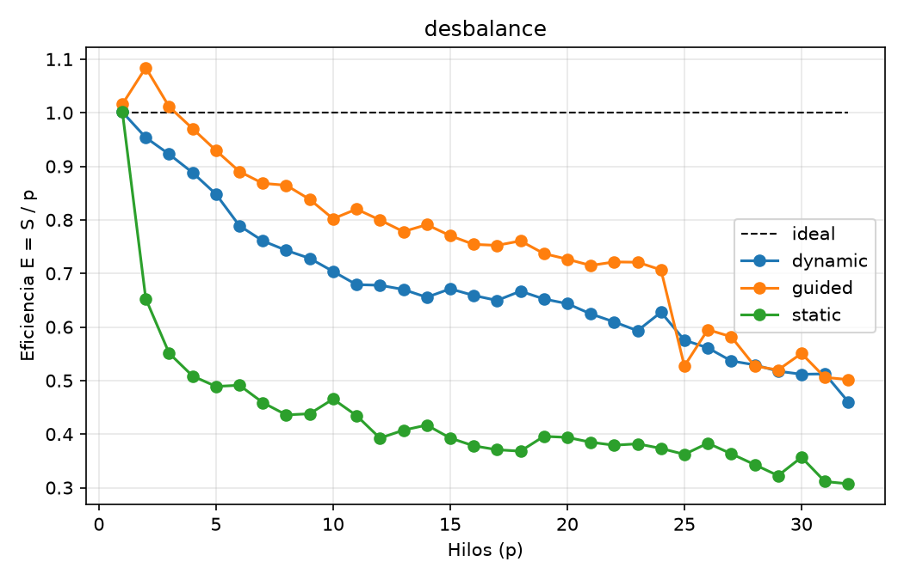
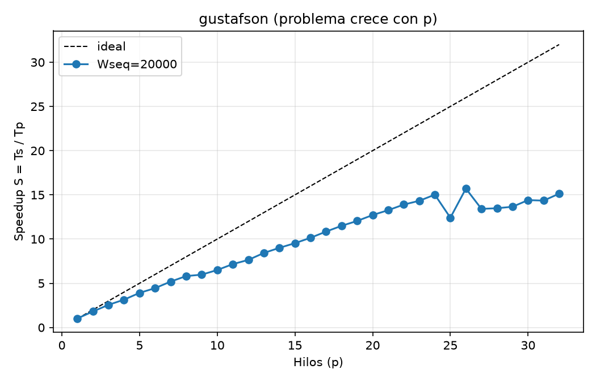
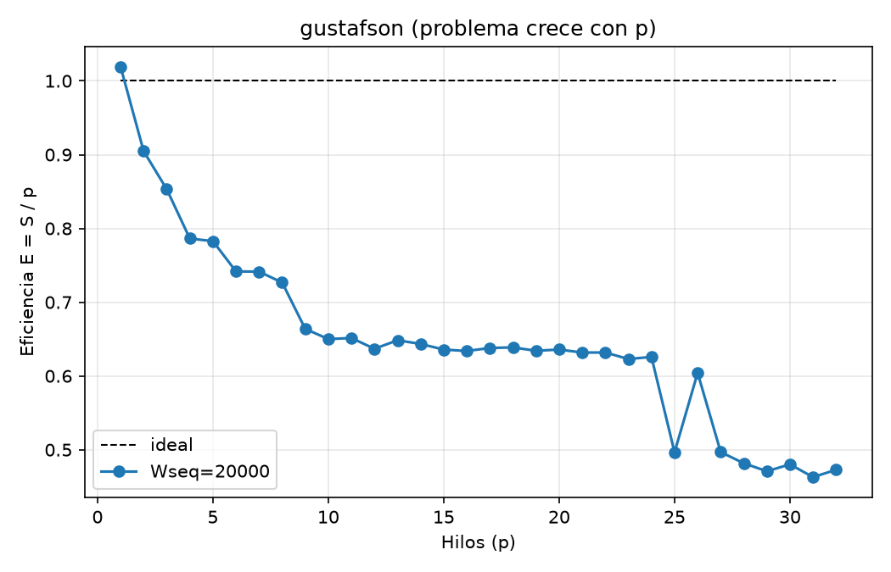

Universidad del Valle de Guatemala
Facultad de Ingeniería
Departamento de Ciencias de la Computación
CC3069 Computación Paralela y Distribuida
Laboratorio 12: ¿Por qué 8 núcleos no son 8 veces más rápido?
Speedup, eficiencia, Amdahl y Gustafson
Nicolás Concuá, 23197
Esteban Cárcamo, 23016
Guatemala, 6 de octubre de 2026
En este laboratorio se midió cuánto más rápido corre un programa en C con OpenMP al agregar hilos, y por qué casi nunca llega a ser p veces más rápido (Universidad del Valle de Guatemala, 2026). Se usaron las métricas de clase: speedup S = Ts / Tp, eficiencia E = S / p, costo C = p·Tp y efectividad F = S / C (Pacheco & Malensek, 2022). Se compararon dos modelos: el de problema fijo (Amdahl, 1967) y el de problema que crece con los núcleos (Gustafson, 1988). Cada medición se repitió cinco veces y se reporta la mediana. Antes de cada experimento se escribió una predicción, que luego se contrasta con lo medido.
Todas las corridas se hicieron en la misma laptop, conectada a la corriente (Tabla 1). Lo más importante del equipo es que sus 32 hilos no son iguales: 16 son hilos de núcleos de rendimiento (P) que comparten núcleo de dos en dos por Hyper-Threading (HT) y 16 son núcleos de eficiencia (E), más lentos. Con un solo hilo, un núcleo P llega a 5.6 GHz por el turbo.
Tabla 1
Datos del equipo
| Dato | Valor |
|---|---|
| CPU | Intel Core i9-13980HX (Raptor Lake, x86_64) |
| Núcleos e hilos | 24 físicos, 32 lógicos (pmax = 32) |
| Núcleos P | 8 con HT (CPU 0–15), hasta 5.4–5.6 GHz |
| Núcleos E | 16 sin HT (CPU 16–31), hasta 4.0 GHz |
| Caché | L1d 48 KiB (P) / 32 KiB (E) por núcleo; L2 2 MiB por núcleo P y 4 MiB por grupo de 4 E; L3 36 MiB compartida |
| Sistema y compilador | Linux 7.2.6 (CachyOS), gobernador powersave; GCC 16.2.1 con -O2 -fopenmp |
Nota. Obtenido con lscpu y lscpu -e (ver evidencia).
La Tabla 2 resume lo que se predijo antes de correr cada experimento y lo que se midió. Cada diferencia se explica en su parte.
Tabla 2
Predicciones escritas antes de medir y resultado obtenido
| Parte | Pregunta | Predicción | Medido |
|---|---|---|---|
| 1 | S(32) con fp = 1.00 | ≈ 16: con static manda el hilo más lento (núcleo E o HT) | 15.28 (máximo 16.28 con p = 24) |
| 1 | S(32) con fp = 0.90 | ≈ 6–7 (techo del modelo: 7.8) | 5.91 |
| 2a | OpenMP con 1 hilo frente a secuencial | 1–5 % más lento | 0.48 % más rápido (ruido) |
| 2b | N desde el que conviene paralelizar | N ≈ 65 536 | Se cumple: S = 3.0 con p = 4 |
| 3 | static, p = 4: trabajo del último hilo y S | 7/16 ≈ 43.8 %, S ≈ 2.29 | S = 2.03 |
| 4 | S máximo con fp = 0.83 según la Parte 1 | 5.9 (5.1 con p = 32), pero aquí S crecerá casi lineal | S(32) = 15.13 |
Se corrió ./lab12 amdahl 400000 fp con fp = 1.00, 0.95, 0.90, 0.75 y 0.50 (Tabla 3 y Figura 1).
Tabla 3
Speedup, eficiencia y valores óptimos de p para cada fracción paralelizable
| fp | S (p = 2) | S (p = 4) | S (p = 32) | E (p = 32) | p con F máxima | p con Tp mínimo |
|---|---|---|---|---|---|---|
| 1.00 | 1.95 | 3.77 | 15.28 | 0.477 | 23 | 24 |
| 0.95 | 1.90 | 3.31 | 8.38 | 0.262 | 23 | 23 |
| 0.90 | 1.80 | 2.74 | 5.91 | 0.185 | 8 | 22 |
| 0.75 | 1.55 | 2.21 | 3.30 | 0.103 | 3 | 22 |
| 0.50 | 1.40 | 1.63 | 1.84 | 0.058 | 1 | 22 |
Cálculo a mano. Para fp = 1.00 y p = 4 (Ts = 0.504553 s, Tp = 0.133820 s): S = 0.504553 / 0.133820 = 3.770; E = 3.770 / 4 = 0.943; C = 4 × 0.133820 = 0.535 s; F = 3.770 / 0.535 = 7.04 s−1. Para fp = 0.90 y p = 32 (Ts = 0.501464 s, Tp = 0.084802 s): S = 5.913; E = 0.185; C = 2.714 s; F = 2.18 s−1. Ambos coinciden con los CSV generados por el script.
Figura 1
Speedup (izquierda) y eficiencia (derecha) del modo amdahl


Predicción frente a lo medido. Con fp = 1.00 se acertó el orden (≈ 16 frente a 15.28), aunque el máximo real está en p = 24. Con fp = 0.90 se midió un poco menos de lo previsto (5.91 frente a 6–7), porque la parte paralela pierde lo mismo que con fp = 1.00 y además la parte secuencial se vuelve más lenta con muchos hilos.
Tp = (1 − fp)·T1 + fp·T1 / p ⇒ S(p) = 1 / [(1 − fp) + fp / p]
Se predijo que OpenMP con 1 hilo sería 1–5 % más lento que la versión secuencial; resultó 0.48 % más rápido (0.502151 s frente a 0.504553 s). El overhead de una región paralela es de microsegundos y el trabajo dura medio segundo, así que la diferencia queda dentro del ruido.
Tabla 4
Speedup de la suma según N y p
| N | Ts | p = 1 | p = 2 | p = 4 | p = 8 | p = 16 | p = 32 |
|---|---|---|---|---|---|---|---|
| 16 | ≈ 2 ns | 0.013 | 0.0006 | 0.0004 | 0.0003 | 0.0002 | 0.0001 |
| 1 024 | 380 ns | 0.69 | 0.12 | 0.08 | 0.05 | 0.03 | 0.01 |
| 65 536 | 33.7 µs | 1.18 | 1.80 | 3.01 | 1.89 | 1.90 | 1.06 |
| 1 048 576 | 494 µs | 1.02 | 1.90 | 2.31 | 3.65 | 5.56 | 4.80 |
| 16 777 216 | 9.02 ms | 1.01 | 1.85 | 2.40 | 2.26 | 2.29 | 2.34 |
Nota. Los tiempos tienen resolución de 1 ns, así que el Ts de N = 16 tiene un error de hasta ±25 %.
Figura 2
Speedup de la suma según el tamaño del problema

La predicción se cumplió: con N = 1024 lo paralelo pierde con cualquier p y con 65 536 ya gana. Lo que no se previó es que con N = 65 536 usar 32 hilos casi empata con la versión secuencial (S = 1.06).
En el modo desbalance la iteración i cuesta 1 + 2000·i/W unidades (W = 40 000): el costo crece en línea recta. Se compararon los schedules static, dynamic (bloques de 64) y guided (OpenMP Architecture Review Board, 2021), como se ve en la Tabla 5 y la Figura 3.
Tabla 5
Speedup y eficiencia del modo desbalance por schedule
| Schedule | Ts (ms) | S (2) | S (4) | S (8) | S (16) | S (24) | S (32) | Tp (32, ms) | E (32) |
|---|---|---|---|---|---|---|---|---|---|
| static | 49.24 | 1.31 | 2.03 | 3.49 | 6.05 | 8.96 | 9.83 | 5.01 | 0.31 |
| dynamic | 49.13 | 1.91 | 3.55 | 5.94 | 10.54 | 15.06 | 14.72 | 3.34 | 0.46 |
| guided | 54.88 | 2.17 | 3.88 | 6.92 | 12.07 | 16.96 | 16.06 | 3.42 | 0.50 |
Nota. Entre paréntesis, el número de hilos p. Cada corrida mide su propio Ts.
Figura 3
Speedup (izquierda) y eficiencia (derecha) por schedule


Predicción frente a lo medido. Se predijo S ≈ 2.29 con static y p = 4, y se midió 2.03 (89 %). La cuenta supone que los 4 hilos van tan rápido como el Ts de un hilo, pero con 4 núcleos activos se pierde turbo: en la Parte 1, sin desbalance, E(4) = 0.943. Corrigiendo, 2.29 × 0.943 ≈ 2.16; el 6 % restante es ruido y la ubicación del hilo más cargado. Con p = 2 se predijo 1.33 y se midió 1.31.
El modo gustafson mantiene la parte secuencial en 20 000 unidades y da 100 000 unidades paralelas a cada hilo: el problema es 20 000 + 100 000·p (Figura 4).
Figura 4
Speedup (izquierda) y eficiencia (derecha) del modo gustafson


Predicción frente a lo medido. Con el modelo de la Parte 1 y fp = 0.83, el máximo es 5.9 (5.1 con p = 32), y se predijo que aquí no pasaría. Se acertó: S(32) = 15.13, casi tres veces más, y S crece ≈ 0.63·p hasta p = 24 sin acercarse a ningún techo.
Tabla 6
Fracción secuencial s y speedup medido para cada p
| p | s | S | p | s | S | p | s | S | p | s | S |
|---|---|---|---|---|---|---|---|---|---|---|---|
| 1 | 0.174 | 1.02 | 9 | 0.139 | 5.97 | 17 | 0.135 | 10.85 | 25 | 0.104 | 12.41 |
| 2 | 0.174 | 1.81 | 10 | 0.133 | 6.50 | 18 | 0.131 | 11.50 | 26 | 0.142 | 15.71 |
| 3 | 0.171 | 2.56 | 11 | 0.137 | 7.17 | 19 | 0.131 | 12.05 | 27 | 0.103 | 13.41 |
| 4 | 0.155 | 3.15 | 12 | 0.140 | 7.64 | 20 | 0.135 | 12.72 | 28 | 0.100 | 13.49 |
| 5 | 0.165 | 3.91 | 13 | 0.134 | 8.43 | 21 | 0.133 | 13.27 | 29 | 0.102 | 13.65 |
| 6 | 0.159 | 4.45 | 14 | 0.136 | 9.01 | 22 | 0.133 | 13.90 | 30 | 0.101 | 14.41 |
| 7 | 0.154 | 5.19 | 15 | 0.136 | 9.54 | 23 | 0.130 | 14.33 | 31 | 0.097 | 14.35 |
| 8 | 0.149 | 5.81 | 16 | 0.131 | 10.14 | 24 | 0.131 | 15.02 | 32 | 0.101 | 15.13 |
Ts = s·Tp + p·(1 − s)·Tp ⇒ S = s + p·(1 − s) = p − s·(p − 1)
Verificación con el s de cada fila: p = 2 da 1.83 (medido 1.81); p = 8 da 6.96 (5.81); p = 16 da 14.04 (10.14); p = 32 da 28.87 (15.13). Con p grande el modelo da más porque supone que cada hilo rinde como el núcleo P con turbo de Ts. Si se multiplica por la eficiencia de la Parte 1 con fp = 1.00 (5.55, 9.98 y 13.79), queda a menos de 10 % de lo medido.La Tabla 7 indica qué fuga explica la eficiencia perdida en cada parte. ηr (trabajo repetido) casi no aparece: solo las p − 1 sumas extra del reduction (31 frente a 400 000 unidades en la Parte 1).
Tabla 7
Fuga principal de cada parte y número medido que la demuestra
| Parte | Fuga | Evidencia medida |
|---|---|---|
| 1. Problema fijo | ηf (fracción secuencial) | Con fp = 0.90 el techo es 10 y se midió 5.91 con p = 32; fp despejado = 0.858 |
| 2. Suma de N | ηc (comunicación y sincronización) | Con N = 16 y p = 32 es ≈ 15 000 veces más lento (30 µs de overhead frente a 2 ns) |
| 3. Desbalance | ηb (desbalance de carga) | static S(32) = 9.83 frente a 16.06 de guided, con el mismo trabajo total |
| 4. Problema que crece | ηf casi desaparece | La parte secuencial baja del 17 % al 0.6 % del trabajo y S(32) = 15.13 |
Lo que no encaja en ninguna de las cuatro fugas viene del hardware, que el modelo supone homogéneo y sin recursos compartidos:
Amdahl, G. M. (1967). Validity of the single processor approach to achieving large scale computing capabilities. En Proceedings of the April 18–20, 1967, Spring Joint Computer Conference (pp. 483–485). ACM. https://doi.org/10.1145/1465482.1465560
Gustafson, J. L. (1988). Reevaluating Amdahl's law. Communications of the ACM, 31(5), 532–533. https://doi.org/10.1145/42411.42415
OpenMP Architecture Review Board. (2021). OpenMP application programming interface (Versión 5.2). https://www.openmp.org/specifications/
Pacheco, P. S., & Malensek, M. (2022). An introduction to parallel programming (2.ª ed.). Morgan Kaufmann.
Universidad del Valle de Guatemala. (2026). Lab 12: ¿Por qué 8 núcleos no son 8× más rápido? [Guía de laboratorio]. CC3069 Computación Paralela y Distribuida.